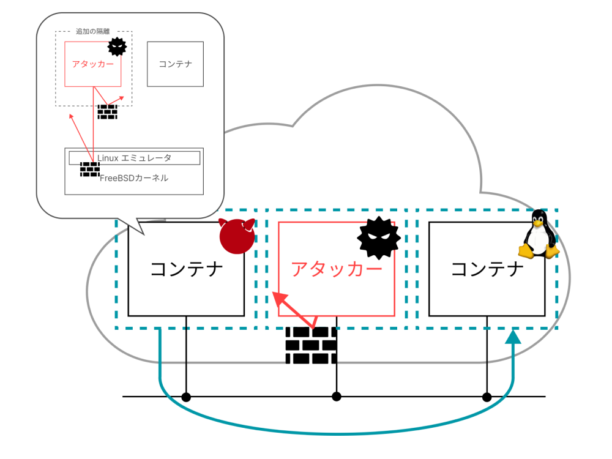
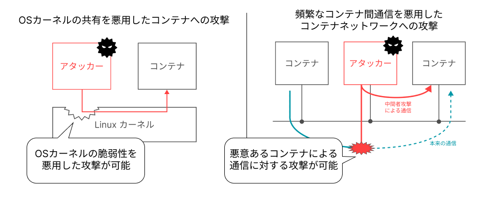
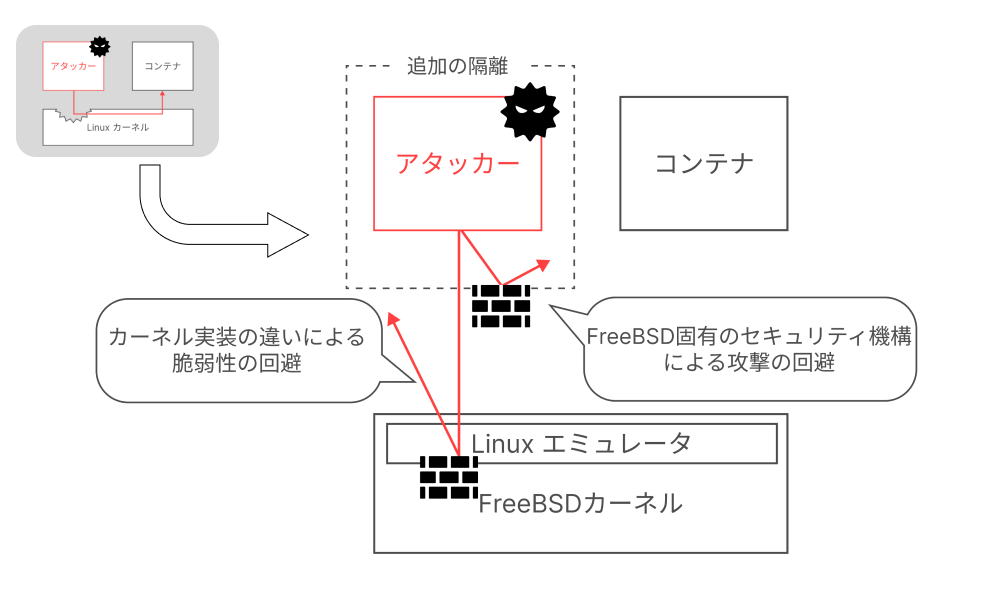
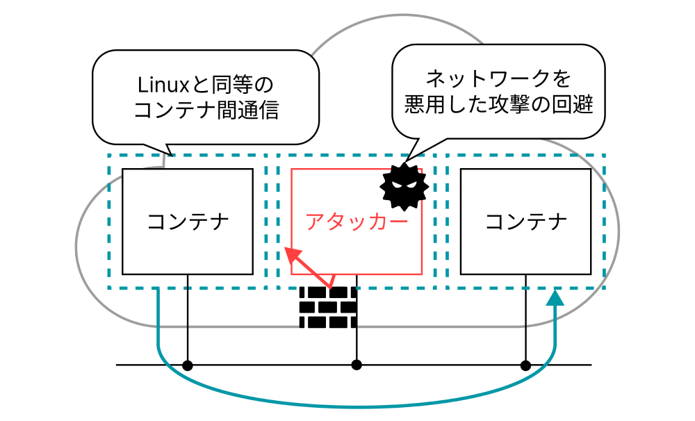

キーワード：コンテナ型仮想化 / コンテナネットワーキング / FreeBSD
本研究では、Linuxのコンテナ型仮想化技術をFreeBSD上に移植することで、Linuxカーネル脆弱性に対する攻撃を低オーバヘッドに回避できる「異種OS機能連携によるセキュアコンテナ」を実現する。クラウドコンピューティング基盤上で異種OS機能連携によるセキュアコンテナを利用することを想定すると、Network NamespaceやCNIプラグインなどのコンテナネットワーキング技術をFreeBSDに移植することが必要不可欠になる。そのため、FreeBSD上で利用できるLinux互換コンテナネットワーキングに関する研究を行っている。
背景

- 軽量なアプリケーション実行環境としてコンテナ型仮想化が注目
- クラウドコンピューティング基盤でのコンテナ利用には攻撃への対処が必要
- クラウド基盤ではコンテナネットワーキングが重要
先行研究：異種OS機能連携によるセキュアコンテナ

- カーネル脆弱性に対する攻撃を低オーバヘッドに回避できるセキュアコンテナ
- FreeBSDの仮想化技術であるjailを活用したLinuxコンテナ互換実行
- FreeBSD固有のセキュリティ機構であるCapsicumによる攻撃の回避
- 課題：FreeBSD上でのセキュアなコンテナネットワーキングに関しては未検討
目的

-
FreeBSD環境におけるセキュアコンテナネットワーキング機構の実現
- Linux互換コンテナネットワーキング機構の実現
- コンテナネットワーキングのセキュア化
実装
今後の課題
- Capsocum/Casperを用いたネットワーク保護手法の検討
- 評価
発表実績
坂口 颯麻, 鈴木 進太郎, 中田 裕貴, 松原 克弥, 異種OS機能連携によるセキュアコンテナ実現に向けたFreeBSD上でのCNI準拠コンテナネットワーキングの実現, 情報処理学会第64回 IOT研究会, 2024/3/12-14, 学生奨励賞受賞
URL
IOT研究会予稿：https://ipsj.ixsq.nii.ac.jp/...
卒業研究スライド：https://speakerdeck.com/soumasakaguchi/graduate-study
IOT研究会スライド：https://speakerdeck.com/soumasakaguchi/iot64
課題研究1スライド：https://speakerdeck.com/soumasakaguchi/project-study-1